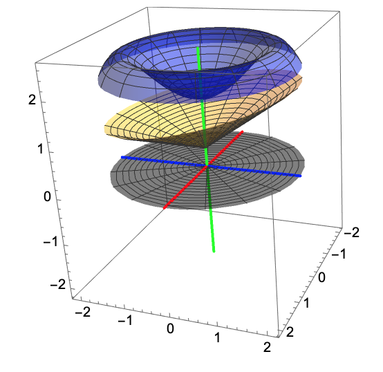
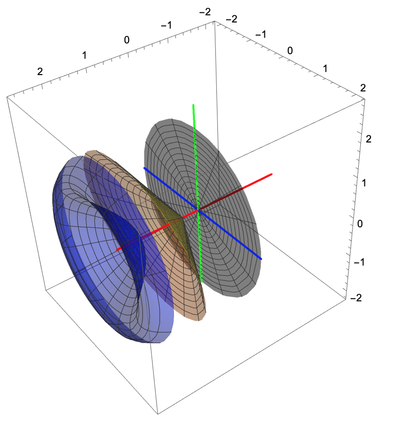
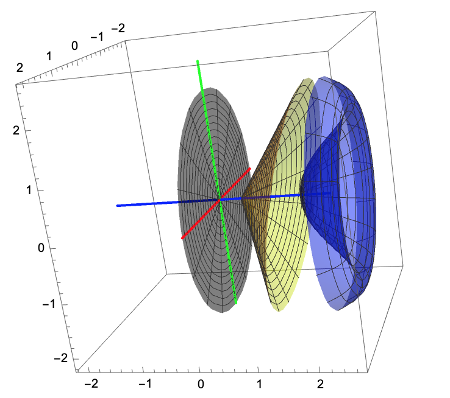
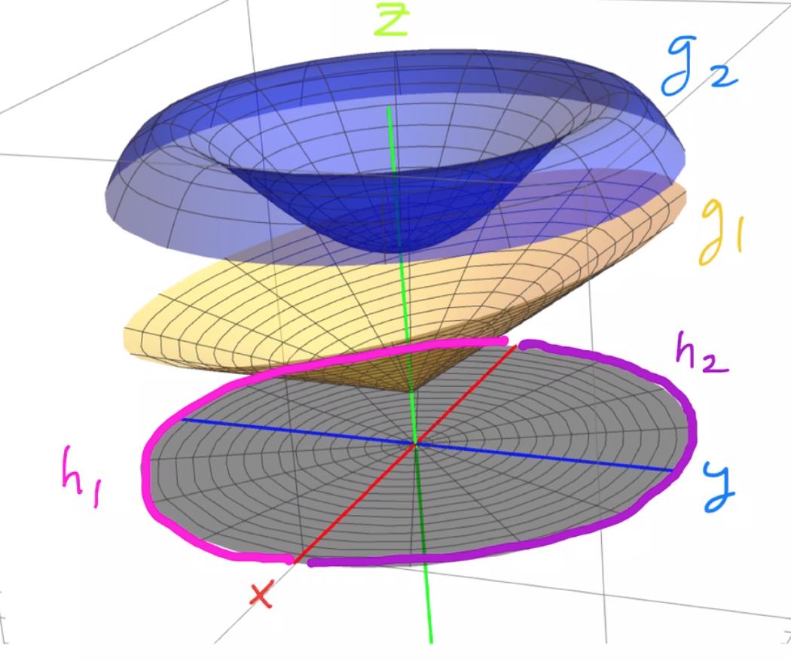
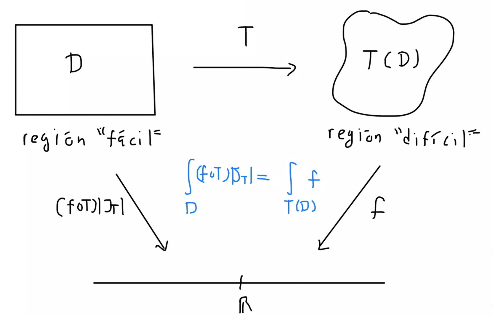
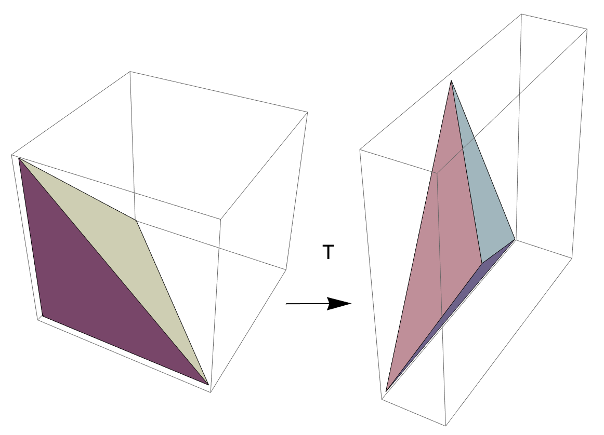

Sea \(\mathcal{R}=[a_1,b_1]\times \cdot \times [a_k,b_k]\) un rectángulo en \(\mathbb{R}^k\). Una partición de \(\mathcal{R}\) es el producto cartesiano de particiones de sus lados. Es decir, si \begin{eqnarray*} \mathbb{P}_1&=&\{a_1=x_0^{(1)}< \cdots < x_{n_1}^{(1)}=b_1 \}, \\ \mathbb{P}_2&=&\{a_2=x_0^{(2)}< \cdots < x_{n_2}^{(2)}=b_2 \}, \\ &\vdots & \\ \mathbb{P}_k&=&\{a_k=x_0^{(k)}< \cdots < x_{n_k}^{(k)}=b_k \}. \end{eqnarray*} son particiones de \([a_i,b_i]\), \(i=1,\dots, k\), respectivamente, entonces \[ \mathbb{P}=\mathbb{P}_1\times \cdots \times \mathbb{P}_k= \{ (x_{i_1}^{(1)}, \dots, x_{i_k}^{(k)}): 0 \leq i_l \leq n_l, l=1,\dots,k \} \] es una partición de \(\mathcal{R}\).
La partición \(\mathbb{P}\) parte a \(\mathcal{R}\) en \(n_1n_2\cdots n_k\) subrectángulos cerrados de dimensión \(k\), explícitamente se escriben de la forma \[ [x_{i_1-1}^{(1)},x_{i_1}^{(1)}]\times \cdots \times [x_{i_{k}-1}^{(k)},x_{i_k}^{(k)}], \] con \(1\leq i_l \leq n_l\) para todo \(l=1,\dots,k\). Como toda la información de los subrectángulos está en los índices \(\{i_1,\dots,i_k\}\), vamos a denotar éstos subrectángulos como \(R_{\underline{i}}\), done \(\underline{i}=(i_1,\dots,i_k)\). Es decir, \[ R_{\underline{i}}=[x_{i_1-1}^{(1)},x_{i_1}^{(1)}]\times \cdots \times [x_{i_{k}-1}^{(k)},x_{i_k}^{(k)}]. \] El rectángulo abierto inducido por \(R_{\underline{i}}\) es llamado un subrectángulo abierto de \(\mathcal{R}\).
Se dice que una partición \(\mathbb{P}'\) de \(\mathcal{R}\) refina a \(\mathbb{P}\) si \(\mathbb{P}\subseteq \mathbb{P}'\).
En el caso 2-dimensional tenemos expresiones de la forma \[ \sum_{i=1}^{n}\sum_{j=1}^{m} m_{i,j}(f) (x_i-x_{i-1}) (y_j-y_{j-1}). \] Para el caso \(k\)-dimensional, la expresión análoga es \[ \sum_{i_1=1}^{n_1} \cdots \sum_{i_k=1}^{n_k} m_{i_1,\dots,i_k}(f) (x_{i_1}-x_{i_1-1})\cdots (x_{i_k}-x_{i_k-1}). \]
Para tratar de simplificar un poco la notación introducimos el siguiente símbolo: si \(\mathbb{P}=\mathbb{P}_1\times \cdots \times \mathbb{P}_k\) es una partición de \(\mathcal{R}\) denotamos \[ I_{\mathbb{P}}=\{(i_1,\dots, i_k): 1\leq i_l \leq n_l, l=1,\dots, k\} \] el cual agrupa a todos los posibles indices que los subrectángulos de \(\mathcal{R}\) inducidos por \(\mathbb{P}\).
Con ayuda de ésta notación, dada la partición \(\mathbb{P}\) y una función acotada \(f:\mathcal{R}\to \mathbb{R}\), podemos escribir \begin{eqnarray*} m_{\underline{i}}(f)&=&\inf\{f(p): p \in R_{\underline{i}}\}, \\ M_{\underline{i}}(f)&=&\sup\{f(p): p \in R_{\underline{i}}\}, \\ m(R_{\underline{i}}) &=& (x_{i_1}^{(1)} - x_{i_1-1}^{(1)})\cdots (x_{i_k}^{(k)}-x_{i_{k}-1}^{(k)}). \end{eqnarray*} Nota: en dimensión 2, \(m(R_{\underline{i}})\) representa el área del subrectángulo \(R_{\underline{i}}\), mientras que en dimensión 3 representa el volumen del subrectángulo \(R_{\underline{i}}\).
Copiando el caso 2-dimensional, definimos la suma inferior y suma superior de \(f\) con respecto a \(\mathbb{P}\) como \begin{eqnarray*} \underline{S}(f,\mathbb{P}) &=& \sum_{\underline{i}\in I_{\mathbb{P}}} m_{\underline{i}}(f) m(R_{\underline{i}})\\ \overline{S}(f,\mathbb{P}) &=& \sum_{\underline{i}\in I_{\mathbb{P}}} M_{\underline{i}}(f) m(R_{\underline{i}}) \end{eqnarray*}
Si la función \(f\) es no negativa, entonces \(\underline{S}(f,\mathbb{P})\) y \(\overline{S}(f,\mathbb{P})\) pueden interpretarse como el área de los subrectángulos que se encuentran por debajo y por encima de la gráfica de \(f\), respectivamente.
Sea \(\mathcal{R}=[a_1,b_1]\times \cdots \times [a_k,b_k]\) un rectángulo en \(\mathbb{R}^k\) y sea \(f:\mathcal{R}\to \mathbb{R}\) una función acotada. Definimos la integral inferior y superior de \(f\) como \begin{eqnarray*} \underline{\int_{\mathcal{R}}} f &=& \sup\{\underline{S}(f,\mathbb{P}): \mathbb{P} \text{ es una partición de } \mathcal{R}\},\\ \overline{\int_{\mathcal{R}}} f &=& \inf\{\overline{S}(f,\mathbb{P}): \mathbb{P} \text{ es una partición de } \mathcal{R}\}. \end{eqnarray*} Si \(\underline{\int_{\mathcal{R}}} f = \overline{\int_{\mathcal{R}}} f\), decimos que \(f\) es Riemann-integrable en \(\mathcal{R}\) y definimos la integral de Riemann de \(f\) en \(\mathcal{R}\) como \[ \int_{\mathcal{R}} f = \underline{\int_{\mathcal{R}}} f = \overline{\int_{\mathcal{R}}} f. \] Otras notaciones para la integral de Riemann de \(f\) en \(\mathcal{R}\) son \[ \int_{\mathcal{R}} f(x_1,x_2,\dots, x_k) dx, \quad \int_{\mathcal{R}} f(x) dm(x) \]
Sea \(\mathcal{R}=[a_1,b_1]\times \cdots \times [a_k,b_k]\) un rectángulo de \(\mathcal{R}^k\) y sean \(f,g:\mathcal{R}\to \mathbb{R}\) funciones acotadas y Riemann-integrables en \(\mathcal{R}\).
Al igual que en el caso 2-dimensional la integral en más dimensiones satisface:
Sea \(\mathcal{R}=[a_1,b_1]\times \cdots \times [a_k,b_k]\) y \(f:\mathcal{R}\to \mathbb{R}\) una función acotada.
\(f\) es Riemann-integrable si y sólo si para toda \(\varepsilon >0\) existe \(\mathbb{P}\) partición de \(\mathcal{R}\) tal que \[ \overline{S}(f,\mathbb{P})-\underline{S}(f,\mathbb{P}) < \varepsilon. \]
Un subconjunto \(A\subseteq \mathbb{R}^k\) es de contenido cero ó tiene contenido cero en \(\mathbb{R}^k\) si para todo \(\varepsilon>0\) existe una familia finita de rectángulos de dimensión \(k\), \(\{R_i\}_{i=1}^n\), tales que
Sea \(A\subseteq \mathbb{R}^k\) un subconjunto acotado. Entonces \(\chi_A\) es Riemann-integrable si y sólo si \(\partial A\) tiene contenido cero en \(\mathbb{R}^k\).
Un subconjunto acotado \(A\subset \mathbb{R}^k\) se llama jordan medible si \(\chi_A\) es Riemann-integrable.
Por el teorema anterior un subconjunto \(A\) es Jordan medible si y sólo si \(\partial A\) tiene contenido cero en \(\mathbb{R}^k\).
Sea \(\mathcal{R}\subset \mathbb{R}^k\) rectángulo de dimensión \(k\) y sea \(f:\mathcal{R}\to \mathbb{R}\) una función acotada. Si el conjunto de discontinuidades de \(f\) tiene contenido cero en \(\mathbb{R}^k\), entonces \(f\) es Riemann-integrable en \(\mathcal{R}\).
Sea \(\mathcal{R}=[a_1,b_1]\times \cdots \times [a_k,b_k] \subset \mathbb{R}^k\) y \(f:\mathcal{R}\to \mathbb{R}\) una función acotada y Riemann integrable sobre \(\mathcal{R}\).
Antes de continuar introducimos un poco de notación. Dado un índice arbitrario \(i_0\in \{1,\ldots,k\}\) por \(\hat{R}\) denotamos al rectángulo de dimensión \(k-1\) que se obtiene al eliminar la coordenada \(i_0\) de \(\mathcal{R}\) y por \(\hat{x}\) denotamos al vector de dimensión \(k-1\) que se obtiene al eliminar la coordenada \(i_0\) de \(x\in \mathcal{R}\).
Sea \(\mathcal{R}=[a_1,b_1]\times \cdots \times [a_n,b_n]\) un rectángulo en \(\mathbb{R}^n\) y \(f:\mathcal{R} \to \mathbb{R}\) una función continua excepto en un subconjunto de contenido cero. Entonces \(f\) es integrable y para cualquier, \(i_1,\dots,i_n\), reordenamiento de \(\{1,\dots, n\}\), se cumple que: \[ \int_{\mathcal{R}}f=\int_{a_{i_1}}^{b_{i_1}} \cdots \int_{a_{i_n}}^{b_{i_n}} f(x_{1},\dots, x_{n})dx_{i_n}\cdots dx_{i_1}. \]
Sea \(\mathcal{S}\subset \mathbb{R}^k\) un subconjunto acotado y \(f:\mathcal{S}\to \mathbb{R}\) una función acotada. Decimos que \(f\) es Riemann-integrable en \(\mathcal{S}\) si existe un rectángulo, de dimensión \(k\), \(\mathcal{R}\subset \mathbb{R}^k\) tal que la función \[ \tilde{f}(x,y)=\left\{ \begin{array}{cc} f(x,y) & (x,y)\in \mathcal{S} \\ 0. & (x,y)\in \mathcal{R}\setminus \mathcal{S} \end{array} \right. \] es Riemann-integrable en \(\mathcal{R}\).
Una región de tipo \(I\) en \(\mathbb{R}^3\) es un subconjunto \(\mathcal{S}\) que se puede describir como \[ \mathcal{S }=\{(x,y,z): (x,y)\in \mathcal{D}, g_1(x,y) \leq z \leq g_2(x,y)\} \] donde:
En otras palabras, \(\mathcal{S}\) es la región entre las gráficas de \(g_1\) y \(g_2\).

De manera similar, las regiones de tipo II y III se pueden describir, respectivamente, como \[ \mathcal{S}=\{(x,y,z): (y,z)\in \mathcal{D}, g_1(y,z)\leq x \leq g_2(y,z) \} \]


Sea \(\mathcal{S}\) una región de tipo I, digamos que es la región entre las gráficas de las funciones \(g_1,g_2:\mathcal{D}\to \mathbb{R}\). Sea \(f:\mathcal{S}\to \mathbb{R}\) una función continua en \(\mathcal{S}\), entonces \(f\) es Riemann-integrable en \(\mathcal{S}\) y \[ \int_{\mathcal{S}}f= \int_{\mathcal{D}}\left( \int_{g_1(x,y)}^{g_2(x,y)}f(x,y,z)dz\right)d(x,y) \]
Si en el teorema anterior en la región \(\mathcal{S}\), \[ \mathcal{S}=\{(x,y,z): (x,y)\in \mathcal{D}, g_1(x,y) \leq z \leq g_2(x,y)\} \] cumple que a su vez \(\mathcal{D}\) es una región de tipo I, digamos que es la región entre las gráficas de \(h_1,h_2\) \[ \mathcal{D}=\{ (x,y): a\leq x \leq b, h_1(x)\leq y \leq h_2(x) \} \] la integral se puede calcular como \[ \int_{\mathcal{S}}f= \int_{a}^{b}\int_{h_1(x)}^{h_2(x)}\int_{g_1(x,y)}^{g_2(x,y)}f(x,y,z)dzdydx \]

De manera similar, si \(\mathcal{D}\) es una región de tipo II, \[ \mathcal{D}=\{ (x,y): c\leq y \leq d, h_1(y)\leq x \leq h_2(y) \} \] la integral se puede calcular como \[ \int_{\mathcal{S}}f= \int_{c}^{d}\int_{h_1(y)}^{h_2(y)}\int_{g_1(x,y)}^{g_2(x,y)}f(x,y,z)dzdxdy \] Nota que cambio en el orden de integración entre las dos últimas fórmulas.
Todas las posibles combinaciones de \(\mathcal{S}\) región de tipo I,II,III se pueden tener con su proyección, \(\mathcal{D}\) siendo proyección de tipo I o II.
Calcula la integral \(\int_{\mathcal{S}} xy d(x,y,z)\), donde \(\mathcal{S}\) es tetraedro acotado por los planos \(x=0, y=0, z=0\) y \(x+y+z=1\).
Sea \(U\subset \mathbb{R}^n\) un abierto y \(T:U\to \mathbb{R}^n\) una función diferenciable en todo punto de \(U\). El Jacobiano de \(T\), en el punto \(p\), es el determinante de la matriz de derivadas parciales de \(T\) en \(p\).
Por ejemplo si \(T\) es una función de dos variables \[ T(x,y)=(u(x,y),v(x,y)) \] el Jacobiano es \[ J_T=\det \left[ \begin{array}{cc} \partial_xu & \partial_yu \\ \partial_xv & \partial_yv \end{array} \right] \]
Haciendo énfasis en las funciones coordenadas \(u,v\) y las variables \(x,y\), otra notación para el Jacobiano es \(\frac{\partial(u,v)}{\partial(x,y)}\)
Nota que el Jacobiano es una función. Por ejemplo si \(u(x,y)=x^2-y^2, v(x,y)=xy-x^2\) entonces \[ J_T(x,y)= \det \left[ \begin{array}{cc} 2x & -2y \\ y-2x & x \end{array} \right]=2x^2-(-2y)(y-2x)=2x^2+2y^2-4xy \]
Sea \(U\subseteq \mathbb{R}^n\) un conjunto abierto y \(T:U\to \mathbb{R}^n\) una función clase \(C^1\) con la característica de que el Jacobiano \(J_T\) no se anula en \(U\). Si \(\mathcal{D}\subseteq U\) es un conjunto abierto con interior no vacío y \(f\) es una función continua definida en \(T(\mathcal{D})\) entonces \[ \int_{T(\mathcal{D})} f = \int_{\mathcal{D}} (f\circ T )|J_T| \]

Para coordenadas cilíndricas \(T:(0,\infty)\times (0,2\pi)\times (-\infty,\infty) \to \mathbb{R}^3\), \[ T(r,\theta,z)=(r\cos(\theta),r\sen(\theta),z) \] se tiene que \[ \int_{T(\mathcal{S})}f=\int_{\alpha}^{\beta}\int_{h_1(\theta)}^{h_2(\theta)}\int_{u_1(r,\theta)}^{u_2(r,\theta)}f(r\cos(\theta),r\sen(\theta))rdzdrd\theta \] donde \(\mathcal{S}=\{(r,\theta,z): \alpha \leq \theta \leq \beta, h_1(\theta)\leq r \leq h_2(\theta), u_1(r,\theta)\leq z \leq u_2(r,\theta)\}\).
Para coordenadas cilíndricas \(T:(0,\infty)\times (0,2\pi)\times (0,\pi) \to \mathbb{R}\) \[ T(\rho, \theta, \phi)=(\rho\sen(\phi)\cos(\theta),\rho\sen(\phi)\sen(\theta), \rho\cos(\phi)) \] se tiene que \[ \int_{T(\mathcal{S})}f=\int_{\alpha}^{\beta}\int_{h_1(\theta)}^{h_2(\theta)}\int_{u_1(r,\theta)}^{u_2(r,\theta)}f(\rho\cos(\theta),\rho\sen(\theta))\rho^2\sen(\phi) d\phi d\rho d\theta \] donde \(\mathcal{S}=\{(\rho,\theta,\phi): \alpha \leq \theta \leq \beta, h_1(\theta)\leq \rho \leq h_2(\theta), u_1(\rho,\theta)\leq \phi \leq u_2(\rho,\theta)\}\).
Para triángulos, tetrahedros, paralelepipedos y en general polígonos los cambios de coordenadas afines son muy útlies.
Por ejemplo para calcular la integral \(\int_{\mathcal{D}} x^2+y\) donde \(\mathcal{D}\) es el triángulo con vértices \[ (1,1), (4,2), (6,4) \] un método es tratar de ver \(\mathcal{D}\) como unión de regiones tipo I ó II. Pero otro método es usar un cambio de coordenadas afin, es decir encontrar una transoformación afín tal que \(T(\mathcal{R})=\mathcal{D}\), donde \(\mathcal{R}\) es el triángulo canónico \((0,0), (1,0), (0,1)\).
Paso 1: Mover el triángulo al origen.
Fijamos un vértice (cualquier vértice), \(p=(1,1)\) y trasladamos el triángulo para que tenga un vértice en el origen: \begin{eqnarray*} p_0&=&(1,1)-p=(0,0),\\ p_1&=&(4,2)-p=(3,1),\\ p_2&=&(6,4)-p=(5,3). \end{eqnarray*}
Paso 2: La matriz.
Encontrar una transformación lineal que mande los vectores canónicos a los lados del triángulo. Es decir encontrar una matriz \(A\) que cumpla: \begin{eqnarray*} Ae_1=p_1\\ Ae_2=p_2. \end{eqnarray*} Esto se logra poniendo los vectores \(p_1,p_2\) como columnas de \(A\), es decir \[ A=\left[ \begin{array}{cc} 3 & 5 \\ 1 & 3 \end{array} \right] \]
Paso 3: La transformación afin.
Fimalmente la transformación que manda el triángulo canónico a triángulo con vértices \((1,1), (4,2), (6,4)\) es \[ T(u,v)=A(u,v)+p=(3u+5v+1,u+3v+1) \]
Razón: \begin{eqnarray*} T(0,0)&=&A(0,0)+p=p_0+p=(1,1), \\ T(1,0)&=&Ae_1+p=p_1+p=(4,2), \\ T(0,1)&=&Ae_2+p=p_2+p=(6,4). \end{eqnarray*}
Finalmente la integral es \begin{eqnarray*} \int_{\mathcal{D}} x^2+y &=& \int_{T(\mathcal{R})} f(x,y) \\ &=& \int_{\mathcal{R}} f(T(u,v))|J_T| \\ &=& \int_{\mathcal{R}} [(3u+5v+1)^2+(u+3v+1)]\det(A) \\ &=& (9-5)\int_{0}^1\int_{0}^{1-u} (3u+5v+1)^2+(u+3v+1) dv du\\ &=&4\frac{101}{12}=\frac{101}{3} \end{eqnarray*}
Calcular la integral \(\int_{\mathcal{D}} x-y+2z\) donde \(\mathcal{D}\) es el tetrahedro con vértices \((1,2,3), (1,6,3), (2,3,5),(1,4,7) \).
Primero encontramos una transformación afin que manda el tetrahedro canónico (es decir, con vértices \((0,0,0), (1,0,0), (0,1,0), (0,0,1)\)) al tetrahedro \(\mathcal{D}\).

Paso 1: Mover tetrahedro al origen.
Fijamos un vértice \(p=(1,2,3)\) (puede ser cualquier vértice) y se traslada el tetrahedro para que tenga un vértice en el origen: \begin{eqnarray*} p_0&=&(1,2,3)-p=(0,0,0),\\ p_1&=&(1,6,3)-p=(0,4,0),\\ p_2&=&(2,3,5)-p=(1,1,2),\\ p_3&=&(1,4,7)-p=(0,2,4). \end{eqnarray*}
Paso 2: La matriz.
Encontrar una transformación lineal que mande los vectores canónicos a los lados del tetrahedro. Es decir una matriz \(A\) tal que \begin{eqnarray*} Ae_1=p_1,\\ Ae_2=p_2,\\ Ae_3=p_3. \end{eqnarray*} lo anterior se logra colocando los vectores \(p_1,p_2,p_3\) como columnas de \(A\), es decir \begin{eqnarray*} A=\left[ \begin{array}{ccc} 0 & 1 & 0 \\ 4 & 1 & 2 \\ 0 & 2 & 4 \end{array} \right] \end{eqnarray*}
Paso 3: La transformación afin.
La transformación afin que mando el tetrahedro canónico a \(\mathcal{D}\) es \[ T(u,v,w)=A(u,v,w)+p=(v+1,4u+v+2w+2,2v+4w+3) \]
Razón: \begin{eqnarray*} T(0,0,0)&=&A(0,0,0)+p=p_0+p=(1,2,3),\\ Te_1&=&Ae_1+p=p_1+p=(1,6,3),\\ Te_2&=&Ae_2+p=p_2+p=(2,3,5),\\ Te_3&=&Ae_3=p_3+p=(1,4,7). \end{eqnarray*}
Finalmente la integral es \begin{eqnarray*} \int_{\mathcal{D}} x-y+2z &=&\int_{T(\mathcal{R})} f(x,y,z) \\ &=& \int_{\mathcal{R}} f(T(u,v,w))|J_T| \\ &=& \int_{\mathcal{R}} [(v+1)-(4u+v+2w+2)+2(2v+4w+3)]\det(A) \\ &=& (-16)\int_{0}^1 \int_{0}^{1-u}\int_{0}^{1-u-v} (-4u+4v+6w+5) dwdvdu \\ &=& (-16)\frac{3}{8}=-6 \end{eqnarray*}
Para paralelepipedos y poligonos más generales la táctica es "triangularlos", después separa la integral usando la Linealidad con respecto a regiones y finalmente calcular la integral sobre cada una de las triangulaciones, como se hizo en los casos anteriores.
Calcula las siguientes integrales.
Calcula las siguientes integrales.
Calcula las siguientes integrales.
Calcula las siguientes integrales.
\(\int_{\mathcal{D}} xy\) donde \(\mathcal{D}\) es la región del primer octante debajo del plano \(z=x+y+2\).
Reescribe la integral iterada en las otras 5 formas equivalentes (\(f\) denota una función continua sobre el dominio adecuado).
Reescribe la integral iterada en las otras 5 formas equivalentes (\(f\) denota una función continua sobre el dominio adecuado).
Prueba las fórmulas para los siguientes Jacobianos.
Calcula las siguientes integrales.
Calcula las siguientes integrales.
Sea \(f:[0,1]\to \mathbb{R}\) una función continua y sea \(\mathcal{D}\) el triángulo canónico. Prueba que \[ \int_{\mathcal{D}} f(x+y)= \int_0^1 tf(t)dt \]